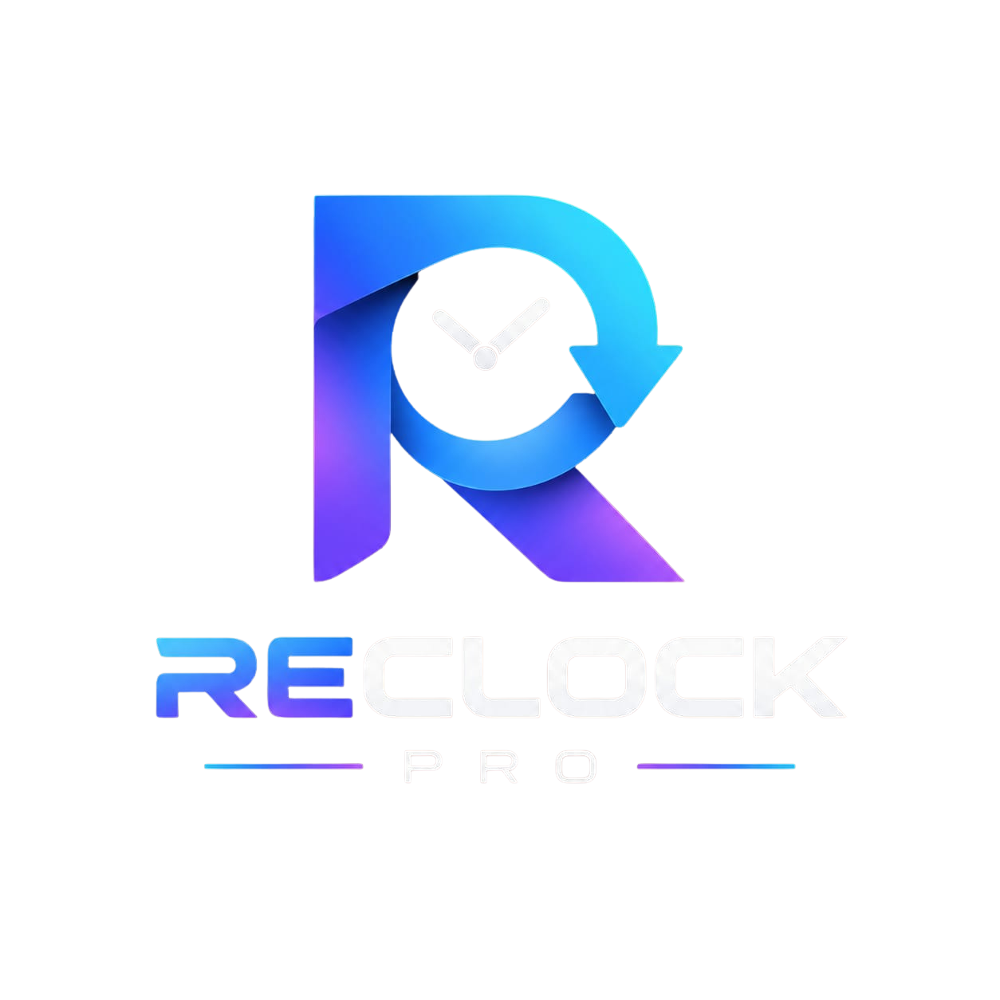

ReClock Pro is an innovative and environmentally friendly multifunctional wall clock made from recycled materials. This product was designed based on the 3R principles (Reduce, Reuse, and Recycle), which aim to reduce the use of new materials, reuse items that are still suitable, and transform waste into useful products. ReClock Pro combines the function of a wall clock with several additional features, such as a calendar, a note board, a phone holder, and a QR code connected to a website.
The idea of creating ReClock Pro comes from the large amount of unused waste that can still be turned into useful products. Materials such as thick cardboard, used bottle caps, and other reusable components can be processed into a modern and attractive multifunctional clock. The manufacturing process begins with designing the product and determining its dimensions. Next, the used cardboard is cut according to the measurements and assembled into the main frame. After that, the clock mechanism and hands are installed in the center. Other sections are then created for the calendar, note board, and phone holder.
In addition to showing the time, ReClock Pro also incorporates digital technology. Its QR code allows users to access a website containing information and schedule reminders. These features make ReClock Pro useful for students and workers because it helps them organize their daily activities more efficiently.
ReClock Pro also applies the 3R principles. Reduce is implemented by minimizing the use of new materials. Reuse is applied by using discarded materials that are still in good condition. Recycle is demonstrated by transforming waste materials into a new product with practical and economic value.
In conclusion, ReClock Pro proves that used materials can be transformed into creative, modern, and useful products. Besides helping people with their daily activities, this innovation also encourages environmental awareness through the implementation of the 3R principles. Therefore, reusing and recycling waste materials should continue to be developed to reduce environmental pollution and create products with greater benefits and economic value.